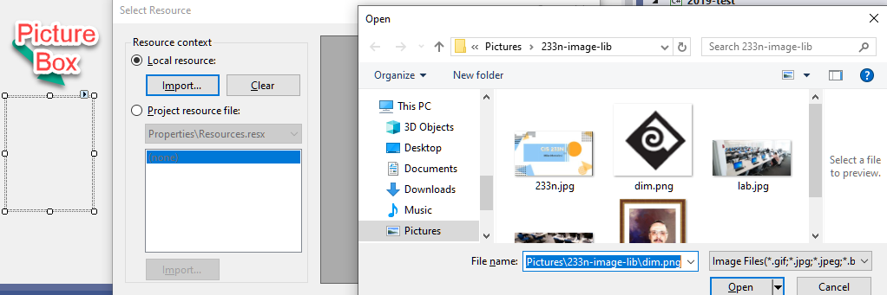

Lecture 1
See Module one for PDF copy of this lecture
This is the summary of Chapter One and two of your book. You need to read your book for more details
Introduction to Programming in C#
program (pro'-gram) [vi]
To engage in a pastime like banging one's head against a wall but with fewer opportunities for reward.
SOFTWARE DEVELOPMENT LIFE CYCLE(SDLC)
code = writing the software which provides the solution to the problem

By Agile-Software-Development-Poster-En.pdf: The original uploader was Dbenson at English Wikipedia and VersionOne, Inc. *derivative work: Devon Fyson (This file was derived from: Sample.svg) [CC-BY-SA-3.0 (http://creativecommons.org/licenses/by-sa/3.0)], via Wikimedia Commons
Agile development is a methodology for developing software that is incremental and iterative. It breaks tasks into small increments that the last one to four weeks. At the end of the increment, a working product is produced that is demonstrated to the stakeholders. Daily status meetings, called “stand-ups” because developers report standing up to discourage lengthy discussions, keep the project on track.
Agile is replacing the traditional Waterfalls SDLC in the workplace.
Program Example
Program – definition
A set of instructions that tell the computer what to do
A set of instructions that tell the computer what to do
Machine Code
Computers respond to binary instructions called machine code:
0110 0011 1100 1110 0100 1111
High-Level Languages
While a computer is happy with 0s and 1s, people are not,
so high-level languages (languages easier for humans to understand) have been invented.
Several high level-languages exist, such as c#, JAVA, COBOL, etc.
High level-languages provide the resources for writing programs in a way we can understand. Once written, a special program called a compiler takes the program instructions and converts them into machine code.
As we stated earlier, machine code is a series of binary instructions that the computer can understand.
Objects
Objects are things (nouns),
for example a ball or a book, a customer or a student
In programming, an object packages data and actions
that operate on that data together as one unit
Properties
Characteristics of an object are called properties.
For example, a ball has a shape and a color.
A book has a number of pages.
Customers and students both share names and address properties
but have unique properties as well. (Can you name some?)
It’s important to distinguish between a property (color)
and the value of the property (red)
Methods
Methods are actions (verbs) associated with an object
For example, you might throw or bounce a ball
Read might be a method of book.
Can you think of possible methods of customer or student?
Events
Events are signals from an object that something has occurred
A ball might signal that it has been moved
A book might signal that the end of the book has been reached.
A customer might signal exceeds the credit limit
Events can be triggered by the user or the system
The programmer can write code (called event handlers)
which are triggered when the event occurs.
Not every event needs to be handled.
In real life, relatively few events have handlers
For example, if the ball has been moved, I can write an event handler
that causes the ball that was moved to glow
Classes
A class is a template or blueprint for an object.
Classes define all properties methods and events.
Objects are called instances of a class.
Each instance, while sharing the same class properties,
can have different values of those properties
Example: suppose I define a Ball class with properties Color and Size
I can create 3 objects from this class
|
Object |
Ball 1 |
Ball 2 |
Ball 3 |
|
Color |
Red |
Yellow |
Blue |
|
Size |
Big |
Small |
Big |
C# is an Object-Oriented Programming Language
Examples of c# Classes
Any control in the toolbox (label, textbox, button, etc.) represents a class
When you use control in the toolbox,
you are using a class to create an object
Examples of c# Objects
You can place many buttons on the form.
Each button on the form is an object.
Examples of c# Properties
Controls have properties like:
-
Name (what the programmer calls the control)
-
Text (what the user sees)
Examples of c# Methods
Some important methods of controls:
-
Focus – put the cursor on a particular control
-
Show – display a control
Examples of c# Events
The most important event for new programmers is:
-
Click – the user has clicked on a control
But there are very many more
Steps for Developing a c# Application
1. Define What the Program is to Do
This is the step where many programmers go wrong.
Unless you clearly know what the program is supposed to do,
how can you solve the problem?
Define:
-
Purpose
-
Output
-
Input
-
Process
Note: I list output before input and process because of your design
should be driven by the output – what the user wants
2. Design the User Interface
Make a quick sketch of what the screen looks like
A lot of times these are done on napkins or notepads.
Before you waste computer time,
be sure you and your user agree on the interface
3. Make a list of the Controls needed and
define the values of each Control’s relevant properties
Choose the best controls to accomplish what you want to do
We’ll outline the controls we’ll be using in the course later in this lesson
and discuss the controls in more detail starting next week.
This week, we’re only interested in 2 properties:
-
Name – what the programmer calls each control
-
Text – what the user sees displayed in the control
Follow naming conventions for significant objects, outlined below
By “significant”, I mean an object that will be used by the programmer
or in all likelihood will be used by maintenance programmers.
Labels that only identify textboxes (so the user knows what to enter)
are typically NOT significant. Example:
Here, “Name” and “Address” are labels that aren’t significant
The textboxes are significant and would be given names
like txtName and txtAddress
I believe that every form IS significant, and should be given a name
(in this I disagree with the book)
4. Make a List of the Methods Needed for Each Control
Right now we’re only concerned with one event, Click,
but we’ll learn more as we go on.
You need to briefly describe what each control will do.
This brief description of the method should be used in the comment
that describes the method. We’ll discuss comments next week.
5. Create a Flowchart or Pseudo Code for Each Method
I only define an algorithm for really difficult problems.
This is a waste of time for simple methods
Of course, what I call simple (after 20 years of programming)
and what you call simple could be 2 different things.
I don’t require this step, but strongly advise it if you’re feeling uncertain
6. Start Visual Studio and create the User Interface
Use steps 2 and 3 to build your forms and other controls
The design steps make this very easy
7. Write the Code for the Event Procedures and Other Methods
Use step 4 to create event procedures
Use step 5 as a guide for the algorithms to nontrivial methods
8. Correct Syntax Errors
A syntax error results from misspelling or other incorrect use of a programming language element.
Typically, these are identified with “blue squiggly” lines, but if you miss them, the system identifies them when you try to run the application.
If it finds syntax errors, Visual Studio asks if you want to continue.
Take a clue from Nancy Reagan and “Just say NO”
Until you fix all syntax errors, the program won’t run as you expect
Some people think that the program will just skip those parts with syntax errors. This is incorrect. If you continue, Visual Studio will run your last “clean” compile (without syntax errors). I don’t know how many times students have sent me a few lines of code and asked why they don’t work. The code looks perfectly fine. Eventually, we discover that the problem lies in a syntax error in another part of the program.
9. Test and Correct Logic Errors
After you correct all the syntax errors, Visual Studio will produce a program, normally called an executable. You must test this to ensure that it produces the correct results (what the user wants).
This is the heart of the programming process,
and is frequently quite lengthy.
Visual Studio IDE
Integrated Development Environment (IDE)
In the old days, you had to edit a program using one tool,
compile using another, link using a third, test using another.
Most languages today have an integrated development environment
where you can accomplish all of these things in one tool
For c# (and other .NET languages) this IDE is called Visual Studio
When you launch Visual Studio, you should see a screen similar to this:
See the Video in the Lecture Video section for more details.
User Interface Design
Overview
This week, we learn about more Controls It’s nice to know about additional controls,
But it’s more important to have an idea about how we’re going to use them
User Interface - Definition
How the application will look at how it will interact with the user
Good Interface – Bad Interface
Good interface
· allows users to perform their daily tasks
· allows users to accomplish their business needs
Bad interface
· distracts user with excess information or unnecessary functionality
· hides critical functionality
· in any way detracts from users’ ability to accomplish tasks
What’s wrong with this interface?
Why is this better? Can it be improved?
When to Use
A form is a container that holds other controls
Whenever you create a Windows Application, you create a form You can have more than one form per project
(but for now, we’ll limit ourselves to one)
Windows applications compile into executables (.exe)
When not to Use
When you want to write code that is portable – easily used by other projects (This term, every project will have a form)
Class libraries (which have no form) compile into dynamic link libraries (.dll)
Most Important Properties
Text – an identifier that appears at the top of the form
This should always meaningfully describe the form to the user AcceptButton – when the user presses Enter, this button is “clicked” CancelButton - when the user presses Esc, this button is “clicked” StartPosition – Where the form appears, relative to the screen
When to Use
Use a label control when you want
· to display output
· to identify other controls on the form
Notice in a good example on page 3, these literals are labels:
· Course, ID, Description, Credit Hours
When not to use
If you need direct user interaction with the control
Only the programmer can change the contents of a label
Most Important Properties
Text – contents of the label
Autosize – set to False if you want a blank label to appear
BorderStyle – set to other than none if you want a blank label to appear
When to Use
Use a button control when you want the user to initiate an action
Notice in a good example on page 3, these are buttons:
· New, Cancel, Delete, Print
Notice Cancel and Delete are disabled (their Enabled property is set to False)
The general rule is: if pressing a button at a particular time can only lead to an error message, disable the button at that time
When not to use
Don’t just add buttons to a form.
Have a clear idea of what each button does.
Make sure the text property clearly defines the button’s purpose
Most Important Properties
Picture Boxes
When to Use Picture Boxes
Picture boxes are used to hold images
Most Important Properties
Image – can be set to any graphic file with and extension of
.bmp, .gif, .jpg, .jpeg, .png, .ico, .emf, .wmf
Sizemode – set to Zoom to make the picture fit in space and preserve aspect ratio set to StretchImage to make the picture fit in space exactly
|  |
If the file is already imported, you can just select it from the list box
Working with Controls
What is a Control?
A control is a visual object. Controls are listed on the Toolbox when a Form is visible.
You can display the Toolbox, by:
- Choosing View – Toolbox
- Pressing Ctrl – Alt – X
The objects discussed on the previous pages (forms, labels, buttons, etc.) are all controls
How to select and work with controls
To select a control on the form, click on it.
It then becomes the primary control (i.e. the control you’re working with) To move a control, drag it.
To size a selected control, drag one of its handles.
Two ways to select more than one control
Hold down the Shift or Ctrl key as you click on each control.
Click on a blank spot in the form and then drag around the controls.
How to align, size or space a group of controls
To size all of the controls in a group, size the primary control. To move all of the controls in a group, move the primary control.
Use the commands in the Format menu or the buttons on the Layout toolbar
to align, size, or space all the controls.
 |
Format Menu
Purpose
As you can see, the above is not a very good interface. There’s too much white space in the upper right.
Spacing between picture boxes is inconsistent The interface isn’t centered.
The Format menu can easily fix all this
Align
If you select two or more controls, you can align them
- Vertically (lefts, centers, right)
- Horizontally (tops, middles, bottoms)
Make Same Size
If you select two or more controls, you can make them the same
-
- Height
- Width
- Both
Center in Form
If you select two or more controls, you can center them in the form
-
- Vertically
- Horizontally
You should always be sure to center all your controls at the end of the design process
For further information
Refer to the Format Menu video
Text Boxes
When to Use
Use a text box control when you want the user to type some input You can also use a text box to display output.
In this case, set the Enabled property to False.
Typically, text boxes are used for free form input
Notice in the good example on page 3, ID and description use text boxes
When not to use
If the user’s choices are limited
In the good example on page 3, status choices don’t use text boxes That’s because the choices are limited to Active or Inactive
Most Important Properties
Text – contents of the text box (typically blank at design time)
Enabled – when False use for output only
MaxLength – the maximum number of characters the user can enter
Sizing, Focus and Tab Order
How to change the size of the form
Click on the form. Drag one of its handles.
Focus
When a user runs a program,
one control on the form is highlighted This control is said to have focus
For example, the description textbox in the example on the right has focus.
Textboxes, buttons, etc. can receive focus. Not all controls can receive focus.
For example, labels never receive focus.
What is Tab Order?
Tab Order is the way the cursor moves when the user presses the Tab key Typically, Tab Order is from top to bottom, from left to right
Buttons typically are the last to receive focus in a tab sequence.
How to adjust the tab order at Design Time
 |
Set the TabIndex property of each control.
An easier way to set Tab Order is View – TabOrder
This sets Tab Order on all controls at once
Just click on the controls from left to right, from top to bottom
Include labels. The TabIndex for identifying label for a text box should immediately precede the TabIndex for the text boxText.
In the above, the identifying label for the
How to set the tab order at Run Time
The Focus method puts the cursor on the specified control A control like a label can have the input focus
while not displaying any visual cues of having the focus.
Focus works best for text boxes and buttons nameTextBox.Focus
cancelButton.Focus
Access Keys
How to set access keys
Professional keyboard users normally hate to use the mouse.
An access key (sometimes called a hot key)
is an underlined character in the text of a menu, menu item, or the label of a control such as a button.
It allows the user to "click" a button by pressing the ALT key in combination with the predefined access key.
For example, if a button runs a procedure to “Convert to Fahrenheit”, adding an ampersand (&) before the letter "F" causes the letter "F" to be underlined in the button text at run time.* The user can run the command associated with the button by pressing ALT+F.
How to set access keys
When you set the Text property for a control, place an ampersand immediately before the letter you want to use for the access key.
Since the access keys are not case sensitive, &N and &n set the same access key.
If you set an access key for a label that immediately precedes a text box in the tab order, the access key will take the user to the text box.
I can’t see the underline at run time
An access key may always be underlined or only underlined when you press Alt. How to change this depends on the operating system.
To change this setting in Windows 10: Open Settings and select Ease of Access from the main menu. Select Keyboard in the left panel and scroll down in the right pane and turn on Enable shortcut underline under the Other Settings section.
Working with Properties
Properties Window
|
Change property values; Get to by:
Can List in alphabetical or category order
Again there are many properties. For now, we’ll explore:
How to display the properties for an object Click on that object or select the object from the drop-down list at the top of the Properties window.
How to change a property Enter a value. Select a value from a drop-down list. Click on an ellipsis to display a dialog box that lets you set the options.
How to change the properties of two or more controls Select the controls so the common properties are displayed in the Properties window. A brief explanation of the selected property appears in a pane at the bottom of the Properties window. For more information, press F1 to display the help information
How to adjust the Properties list Use the first two buttons at the top of the Properties window to sort the properties by category or alphabetically. Use the plus and minus signs to the left of some of the properties and categories to expand and collapse the list.
The Name property Sets the name you use to identify a control in your Visual C # code. Don’t need to be renamed if you don’t intend to refer to the control in your code
For example, buttons and textboxes will always be renamed. But labels can either:
(they can just stay as Label1, Label2, etc.)
The Text property Sets the text that is displayed on the form or control. For a form, the Text value is displayed in the title bar. For controls, the Text value is displayed directly on the control. For a text box, the Text value changes when the user types text into it If you want a text box to be initially blank, be sure to clear its Text property
|
C#.NET Events
Event Handlers (Event Procedures)
As explained in lesson 1, an event is a signal to the programmer that something has happened during run time.
An event handler is code written by the programmer that is executed when the event occurs.
There are many events that can occur,
but the one we’ll concentrate on for now is the Click event. This occurs when the user clicks on a control (usually a button,
but we learn that Picture Boxes can have Click events too in this lesson).
So the event handler for the Click event is code that will be executed when the user clicks on the control.
Example of an event handler:
private void darWilliamsPicture_Click(object sender, EventArgs e)
{
// Displays "Dar Williams" when this picture is selected musicianNameLabel.Text = "Dar Williams";
}
The first line is created by the system when you double click on the control. (We’ll learn how to create other events later in the term.)
The braces { } also appear at the same time. All your code must be typed between the braces
The line in green /// Displays "Dar Williams" when this picture is selected
is a comment. Our standards require comments at the start of each method. (More on this later)
The other line musicianNameLabel.Text = "Dar Williams";
defines what the method does (is the actual code). Normally, there will be more than one line of code, but we’ll keep things simple to start out.
Entering Code
How to Enter Control Names
As you type the first few letters of the control name,
a feature called Intellisense selects possible words that you may intend to type
When it highlights the control you want you can select the control
by pressing the Tab key.
You can use the arrow keys to select the appropriate control or just continue typing until the appropriate control is selected.
How to enter member names in the Code Editor
Once you enter the control name, type dot (.) to display a list of the available members (properties and methods) for an object.
Type the first few letters of the member name, so the Code Editor selects the first entry
in list that matches those letters.
Once the correct member name is selected,
press the Tab key to insert the member into your code.
Note: as you type, you’ll notice errors appear in the Error list. Ignore these until you’re finished typing.
The purpose of the semicolon (;)
The semicolon (;) is required at the end of each line of code
The purpose of the Dot (.)
The Dot (.) separates the control name from the member name. It can also separate the member name from the submember name (if the member has a submember.)
Example:
musicianNameLabel.Font.Bold tells you whether or not musicianNameLabel is bold
How to create a Click event procedure for a Button or PictureBox
In the Form Designer, double-click the Button or PictureBox for which you want to create an event procedure.
Type the C# code for the event procedure between the { and }.
To return to the Form Designer, click on the \ab for the Design.
Changing Properties at Run Time
object.property = value Examples:
musicianNameLabel.Text = "Iron and Wine"; musicianNameLabel.BackColor = Color.Yellow; musicianNameLabel.Visible = false;
Changing Properties of the Form
When you are referring to the form,
use the keyword this, instead of the form name.
(The form name is a class name; this is an object name. We’ll discuss later in the term)
Use
this.Text = "Demo Name Changed";
frmDemo.Text = "Demo Name Changed";
Now You See Me
You can set the visibility of a control at run time
musicianNameLabel.Visible = false; musicianNameLabel.Visible = true;
Comments
Use of Comments
I can’t stress enough how important good comments are to a program Comments help programmers maintain programs
by making it more understandable
There are 2 extremes: both of which are bad
- No comments
- Every line commented
Focus on what a program or procedure does, not how it does it
Line Comments
Line comments start with //
Use line comments when you have only a line or two of comments
// Displays "Iron and Wine" when this picture is selected
Block comments
Block comments start with /* and end with */
Use block comments when you have a lot of comments
/*
Project Musicians
Date Sept 2013
Display name of selected musician
*/
Comment standards
Comment header
Every form’s code begins with a block comment
that defines Project, Programmer, Date and what the form does This can be at the very top or before the name space declaration
using System.Windows.Forms;
/*
Project Musicians Programmer mike mostafavi Date Sept 2013
Display name of selected musician
*/
namespace Demo_2 Sample_GUI
Method Comments
Every method should have a comment at the start explaining what the method does.
These should be short so use line comments It’s OK to use block comments if you must
private void radAniDiFranco_Click(object sender, EventArgs e)
{
// Displays "ani diFranco" when this picture is selected
Types of Errors
Syntax Errors
Program does not compile Typically, spelling mistakes Can also be “grammatical” errors Easy to spot and correct
Runtime Errors
Program compiles, but produces an error when run Easy to identify
Typically, simple syntax fixes or exception handling solves the problem
Logic Errors
Program compiles and runs successfully, but doesn’t produce the correct result These are harder to trace down,
But Visual Studio provides a host of debugging tools.